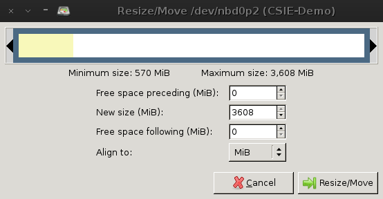

- 登入各組之機器
$ ssh -X cloud@'Server-IP'
- Check hardware virtualization support, and then install KVM.
$ egrep '(vmx|svm)' --color=always /proc/cpuinfo
flags : fpu de pse tsc msr pae mce cx8 apic sep mtrr pge mca cmov pat pse36 clflush mmx fxsr sse sse2 ht syscall nx lm nopl pni cx16 popcnt hypervisor lahf_lm cmp_legacy svm abm sse4a flags : fpu de pse tsc msr pae mce cx8 apic sep mtrr pge mca cmov pat pse36 clflush mmx fxsr sse sse2 ht syscall nx lm nopl pni cx16 popcnt hypervisor lahf_lm cmp_legacy svm abm sse4a flags : fpu de pse tsc msr pae mce cx8 apic sep mtrr pge mca cmov pat pse36 clflush mmx fxsr sse sse2 ht syscall nx lm nopl pni cx16 popcnt hypervisor lahf_lm cmp_legacy svm abm sse4a flags : fpu de pse tsc msr pae mce cx8 apic sep mtrr pge mca cmov pat pse36 clflush mmx fxsr sse sse2 ht syscall nx lm nopl pni cx16 popcnt hypervisor lahf_lm cmp_legacy svm abm sse4a
- 安裝 KVM 及相關套件
$ sudo aptitude update $ sudo aptitude install qemu-kvm qemu-utils vde2 uml-utilities socat screen
註：kvm 套件已經被 qemu-kvm 取代，往後已無須安裝 kvm。
- 載入 kernel module
$ lsmod | grep kvm
kvm_amd 47218 0 kvm 287662 1 kvm_amd
若沒有自動載入模組則手動載入
$ sudo modprobe kvm_amd
將帳號加入 kvm 群組後重新登入
$ sudo adduser cloud kvm
Adding user `cloud' to group `kvm' ... Adding user cloud to group kvm Done.
$ exit $ ssh -X cloud@'Server-IP'
- Prepare for VM.
$ mkdir KVM; cd KVM $ tar zxvf ../KVM-tool-*.tgz
- Configure VM, we use Config-Kvm script to configure ../img/VM-01.img.
$ cd ../bin $ Config-Kvm
./Config-Kvm OS.img hostname VM-IP Ether-card [TAP-No] TAP-No is optional, if need tap to be different from tap0. - 查看目前網路設定
$ ifconfig
eth0 Link encap:Ethernet HWaddr ac:16:2d:*:*:* inet addr:140.120.*.* Bcast:140.120.*.* Mask:255.255.255.0 inet6 addr: fe80::ae16:2dff:fed3:3293/64 Scope:Link UP BROADCAST RUNNING MULTICAST MTU:1500 Metric:1 RX packets:697283 errors:0 dropped:0 overruns:0 frame:0 TX packets:1211491 errors:0 dropped:0 overruns:0 carrier:0 collisions:0 txqueuelen:1000 RX bytes:513941018 (490.1 MiB) TX bytes:1657385567 (1.5 GiB) eth0:0 Link encap:Ethernet HWaddr ac:16:2d:*:*:* inet addr:192.168.0.1 Bcast:192.168.0.255 Mask:255.255.255.0 UP BROADCAST RUNNING MULTICAST MTU:1500 Metric:1 lo Link encap:Local Loopback inet addr:127.0.0.1 Mask:255.0.0.0 inet6 addr: ::1/128 Scope:Host UP LOOPBACK RUNNING MTU:16436 Metric:1 RX packets:161692 errors:0 dropped:0 overruns:0 frame:0 TX packets:161692 errors:0 dropped:0 overruns:0 carrier:0 collisions:0 txqueuelen:0 RX bytes:1576366920 (1.4 GiB) TX bytes:1576366920 (1.4 GiB) - 使用 IP Alias 建立虛擬網段
# sudo ifconfig eth0:0 192.168.0.1 netmask 255.255.255.0 up
由於每次開機都會用到 IP Alias，所以我們將指令寫進 /etc/rc.local，如此一來每次開機就會先執行.
$ more /etc/rc.local
#!/bin/sh -e # # rc.local # # This script is executed at the end of each multiuser runlevel. # Make sure that the script will "exit 0" on success or any other # value on error. # # In order to enable or disable this script just change the execution # bits. # # By default this script does nothing. ifconfig eth0:0 192.168.0.1 netmask 255.255.255.0 up exit 0
$ Config-Kvm ../img/VM-01.img vm-01 192.168.0.11 eth0:0
Mount point /mnt/tmp does not exist, create it first.
$ sudo mkdir /mnt/tmp $ Config-Kvm ../img/VM-01.img vm-01 192.168.0.11 eth0:0
I got current IP: 192.168.0.1, FakeMac: 78:e3:b5:*:*:* SockDir=/home/cloud/KVM/network-2161 OPTIONS=-tap tap0 -mod 644 -sock=/home/cloud/KVM/netw ork-2161 -mgmt /home/cloud/KVM/network-2161/vde_switch.mgmt
$ ls -l *vm-01*
-rwxr-xr-x 1 cloud cloud 1122 Oct 7 16:53 start-vm-01 -rwxr-xr-x 1 cloud cloud 1152 Oct 7 16:53 start-vm-01-AsDaemon -rwxr-xr-x 1 cloud cloud 1879 Oct 7 16:53 stop-vm-01-restore-lan
$ start-vm-01
- 登入測試
Login VM as cloud, and then in the VM type following commands.注意：下列指令務必下在虛擬機器中，否則會將實體機器關閉！
cloud@vm-01:~$ ifconfig cloud@vm-01:~$ sudo init 0
- 關閉 VM 並且回復網路
$ stop-vm-01-restore-lan $ ps -C kvm
$ cd img $ cp ~/Debian-sid.img.gz VM-01.img.gz $ gunzip VM-01.img.gz $ echo $?
0
- 建立虛擬磁碟
$ cd ~/KVM/img $ qemu-img create DebSqz-Mini.img 2G
Formatting 'DebSqz-Mini.img', fmt=raw size=2147483648
- 安裝作業系統
Partition the image as: /boot and /
Give 512M to boot, turn on its boot flag, use ext2 filesystem format. The rest for / partition, use ext4 filesystem format. Install only the minimal packages offered by the installation menu, but must include openssh-server, since we need to login the VM via ssh.$ kvm -cdrom ~/debian-6.0.4-amd64-netinst.iso -m 512M -boot d DebSqz-Mini.img&-boot d 表示優先以光碟機開機。-boot 參數使用方式：
-boot [order=drives][,once=drives][,menu=on|off] [,splash=sp_name][,splash-time=sp_time] 'drives': floppy (a), hard disk (c), CD-ROM (d), network (n) 'sp_name': the file's name that would be passed to bios as logo picture, if menu=on 'sp_time': the period that splash picture last if menu=on, unit is ms安裝系統時跑很慢怎麼辦？
註：使用 X-window X11 forward 來顯示 QEMU 視窗雖然效果比較好， 但是消耗的頻寬也比較大。如果在家連線到學校速度太慢難以忍受，可以考慮使用以下方式來連線安裝。
- 以 VNC 遠端連線安裝
$ sudo aptitude install tightvncserver $ kvm -cdrom ~/debian-6.0.4-amd64-netinst.iso -m 512M -boot d -vnc :1 DebSqz-Mini.img &
接著在自己電腦上使用 vnc 連線軟體連線至 'Server-IP':5901
各平台的 VNC client 端下載
手動建立的虛擬機器如何關機？
- 以 Root 身份來關機
由於 Debian 文字模式預設是不安裝 sudo 的，因此我們需先切換至 root 方能關閉虛擬機器。
debian:~$ su debian:~# halt
- 以 VNC 遠端連線安裝
- VM 安裝過程
在 Linux 環境下大多數的指令，我們可以用以下方式來查詢使用方法。
- man - an interface to the on-line reference manuals
$ man kvm
- help - 通常在指令後面加上 -h, -help, --help 即會列印出簡單說明。
$ kvm --help
- Shell scripts 說明
- start-vm-01 在前景執行。會彈出 x-window 視窗，可以正常顯示圖形介面。
- start-vm-01-AsDaemon 在背景執行。加上 -curses 參數，並且以 screen 放至背景執行，在系統穩定後通常以這種方式執行。
- stop-vm-01-restore-lan 將虛擬機器關閉，並且回復網路狀態。
$ more start-vm-01
#! /bin/bash # Don't Edit, File automatically generated by Config-KVM script if [ $EUID -ne 0 ] then sudo echo "Super User passwd, please:" if [ $? -ne 0 ] then echo "Sorry, need su privilege!" exit 1 fi fi sudo chmod 666 /dev/net/tun sudo tunctl -u cloud -t tap0 sudo ifconfig tap0 192.168.0.1 netmask 255.255.255.255 up sudo iptables --table nat -A POSTROUTING --out-interface eth0:0 -j MASQUERADE sudo iptables -A FORWARD --in-interface tap0 -j ACCEPT sudo chmod 666 /dev/net/tun # First time only get 660 sudo sysctl net.ipv4.ip_forward=1 sudo sysctl net.ipv4.conf.tap0.proxy_arp=1 sudo arp -Ds 192.168.0.11 eth0:0 pub sudo route add -host 192.168.0.11 dev tap0 echo "Starting vde_switch..." vde_switch -tap tap0 -mod 644 -sock=/home/cloud/KVM/network-2161 -mgmt /home/cloud/KVM/network-2161/vde_switch.mgmt -daemon </dev/null >/dev/null echo "Starting VM: vm-01..., mem=512M" kvm -net vde,vlan=0,sock=/home/cloud/KVM/network-2161 -net nic,vlan=0,macaddr=ac:16:2d:*:*:* -m 512M -monitor unix:/home/cloud/KVM/network-2161/MonSock,server,nowait -hda ../img/VM-01.img &
$ diff start-vm-01 start-vm-01-AsDaemon
25c25 < kvm -net vde,vlan=0,sock=/home/cloud/KVM/network-2161 -net nic,vlan=0,macaddr=ac:16:2d:* :*:* -m 512M -monitor unix:/home/cloud/KVM/network-2161/MonSock,server,nowait -hda ../img/lab1/ VM-01.img & --- > screen -S vm-01 -d -m kvm -net vde,vlan=0,sock=/home/cloud/KVM/network-2161 -net nic,vla n=0,macaddr=ac:16:2d:*:*:* -m 512M -monitor unix:/home/cloud/KVM/network-2161/MonSock,serv er,nowait -curses -hda ../img/VM-01.img &
- 將被放到背景的執行緒喚回前景
$ screen -ls
$ screen -r vm-01 C-a C-d (detach) Detach screen from this terminal.
$ more stop-vm-01-restore-lan
#! /bin/bash # Don't Edit, File automatically generated by Config-KVM script ############################################################# IsThereTapDevice() { declare int i=0; for devices in `find /sys/class/net -type l -name "tap*"` do ((i++)); done if [ ${i} -gt 0 ] then echo "Yes" else echo "No" fi } ############################################################# if [ $EUID -ne 0 ] then sudo echo "Super User passwd, please:" if [ $? -ne 0 ] then echo "Sorry, need su privilege!" exit 1 fi fi echo "system_powerdown" | socat - unix-connect:/home/cloud/KVM/network-2161/MonSock echo "Please wait 10 seconds." sleep 10 ping -c 3 192.168.0.11 if [ $? -eq 0 ] then echo "vm-01 still alive, shut it down. Enter passwd twice!" ssh -t cloud@192.168.0.11 'sudo init 0' else rm -f /home/cloud/KVM/network-2161/MonSock fi # Killing the vde_switch daemon echo 'Stopping swich lan' sudo pkill -f "vde_switch -tap tap0 -mod 644 -sock=/home/cloud/KVM/network-2161 -mgmt /home/cloud/KVM/network-2161/vde_switch.mgmt" # Removing the sockets if need be if [ -S /home/cloud/KVM/network-2161/ctl ]; then rm /home/cloud/KVM/network-2161/ctl; fi if [ -S /home/cloud/KVM/network-2161/vde_switch.mgmt ]; then rm /home/cloud/KVM/network-2161/vde_switch.mgmt; fi if [ -d /home/cloud/KVM/network-2161 ]; then rm -rf /home/cloud/KVM/network-2161; fi echo "Restore lan..." sudo sysctl net.ipv4.conf.tap0.proxy_arp=0 sudo ifconfig tap0 192.168.0.1 down sudo iptables --table nat -D POSTROUTING --out-interface eth0:0 -j MASQUERADE sudo iptables -D FORWARD --in-interface tap0 -j ACCEPT # sudo route del -host 192.168.0.11 dev tap0 # sudo arp -d 192.168.0.11 sudo tunctl -d tap0 if [ `IsThereTapDevice` = "No" ] then sudo chmod 600 /dev/net/tun sudo sysctl net.ipv4.ip_forward=0 fi
$ more Config-Kvm
#! /bin/bash if [ $# != 4 -a $# != 5 ] then echo "$0 OS.img hostname VM-IP Ether-card [TAP-No]" echo " TAP-No is optional, if need tap to be different from tap0." exit 1 elif [ ! -f $1 ] then echo "OS image: $1 does not exist." exit 2 elif [ ! -d /mnt/tmp ] then echo "Mount point /mnt/tmp does not exist, create it first." exit 3 fi # We also need to test hostname, VM-IP, Ether-card are legal ones. if [ $# -eq 5 ] then TAP="tap${5}" KvmScript="start-${2}-${5}" StopAndRestoreLan="stop-${2}-restore-lan-${5}" else TAP="tap0" KvmScript="start-${2}" StopAndRestoreLan="stop-${2}-restore-lan" fi DeclAutoGen="# Don't Edit, File automatically generated by Config-KVM script" # We need to get the Ip of the assigned ether card and its MAC address and get a # fake MAC address for our VM. HostIP=`ifconfig $4 | grep "Bcast" | sed 's/^[ \t]*inet addr://' | sed 's/[ \t]*Bcast:.*$//'` PREFIX=`ifconfig $4 | grep "HWaddr" | sed 's/^eth[0-9]*.*Link.*HWaddr //' | cut -d':' -f 1-3` F4=`od -An -N1 -x /dev/random | sed 's/^\ 00//'` F5=`od -An -N1 -x /dev/random | sed 's/^\ 00//'` F6=`od -An -N1 -x /dev/random | sed 's/^\ 00//'` FakeMac=$PREFIX:${F4}:${F5}:${F6} echo " I got current IP: ${HostIP}, FakeMac: ${FakeMac}" echo "$2" >hostname echo "127.0.0.1 localhost.localdomain localhost" >hosts # Without the next line, "$ hostname --fqdn" can't produce the correct hostname. echo "127.0.1.1 $2" >>hosts echo "" >>hosts echo "# The following lines are desirable for IPv6 capable hosts" >>hosts echo "# \(added automatically by netbase upgrade\)" >>hosts echo "" >>hosts echo "::1 ip6-localhost ip6-loopback" >>hosts echo "fe00::0 ip6-localnet" >>hosts echo "ff00::0 ip6-mcastprefix" >>hosts echo "ff02::1 ip6-allnodes" >>hosts echo "ff02::2 ip6-allrouters" >>hosts echo "ff02::3 ip6-allhosts" >>hosts string=`basename $0` Offset=`file $1` Offset=`echo -n ${Offset##*startsector }` Offset=`echo -n ${Offset%%,*}` Offset=`expr ${Offset} '*' 512` sudo mount -o loop,offset=${Offset} $1 /mnt/tmp if [ ! -d /mnt/tmp/src2 ] then sudo mkdir /mnt/tmp/src2 fi # Apparently, Debian adopts the lousy Ubuntu ether device rename policy. We are forced # to empty the /etc/udev/rules.d/70*net* file!! Otherwise, next time we boot our VM, # its ether device name will be wrong! WHOAMI=`whoami` sudo cp hostname /mnt/tmp/etc/hostname sudo cp /etc/resolv.conf /mnt/tmp/etc sudo cp hosts /mnt/tmp/etc/hosts sudo cp recover70rules /mnt/tmp/home/${WHOAMI} sudo cp ../DebianNetFiles/Empty70NetFile /mnt/tmp/home/${WHOAMI} # Bring up ether interface and route packets to host in /etc/rc.local cp ../DebianNetFiles/rc.local.kvm rc.local echo "" >>rc.local echo "exit 0" >>rc.local sudo cp rc.local /mnt/tmp/etc/rc.local sudo chmod 755 /mnt/tmp/etc/rc.local cat <<EOF >interfaces auto lo eth0 iface lo inet loopback iface eth0 inet static address ${3} netmask 255.255.255.0 gateway ${HostIP} dns-nameservers 140.120.13.1 140.120.1.2 EOF if [ ! -f /mnt/tmp/etc/ssh/ssh_config.orig ] then sudo mv /mnt/tmp/etc/ssh/ssh_config /mnt/tmp/etc/ssh/ssh_config.orig fi if [ ! -f /mnt/tmp/etc/ssh/sshd_config.orig ] then sudo mv /mnt/tmp/etc/ssh/sshd_config /mnt/tmp/etc/ssh/sshd_config.orig fi if [ ! -f /mnt/tmp/etc/apt/sources.list.orig ] then sudo mv /mnt/tmp/etc/apt/sources.list /mnt/tmp/etc/apt/sources.list.orig fi if [ ! -f /mnt/tmp/etc/network/interfaces.orig ] then sudo mv /mnt/tmp/etc/network/interfaces /mnt/tmp/etc/network/interfaces.orig fi if [ -f /mnt/tmp/etc/udev/rules.d/70-persistent-net.rules ] then sudo rm /mnt/tmp/etc/udev/rules.d/70-persistent-net.rules fi sudo cp ../DebianNetFiles/ssh_config /mnt/tmp/etc/ssh sudo cp ../DebianNetFiles/sshd_config /mnt/tmp/etc/ssh sudo cp ../DebianNetFiles/sources.list /mnt/tmp/etc/apt sudo cp interfaces /mnt/tmp/etc/network/interfaces sudo umount /mnt/tmp # Next three files are no longer needed and rc.local does not exist for Minix rm -f rc.local hostname hosts interfaces # Preparing Host Network Configuration Script echo "#! /bin/bash" >${KvmScript} echo "" >>${KvmScript} echo "${DeclAutoGen}" >>${KvmScript} echo "if [ \$EUID -ne 0 ]" >>${KvmScript} echo " then sudo echo \"Super User passwd, please:\"" >>${KvmScript} echo " if [ \$? -ne 0 ]" >>${KvmScript} echo " then echo \"Sorry, need su privilege!\"" >>${KvmScript} echo " exit 1" >>${KvmScript} echo " fi" >>${KvmScript} echo "fi" >>${KvmScript} echo "" >>${KvmScript} echo "sudo chmod 666 /dev/net/tun" >>${KvmScript} echo "sudo tunctl -u `whoami` -t ${TAP}" >>${KvmScript} echo "sudo ifconfig ${TAP} ${HostIP} netmask 255.255.255.255 up" >>${KvmScript} echo "sudo iptables --table nat -A POSTROUTING --out-interface $4 -j MASQUERADE" >>${KvmScript} echo "sudo iptables -A FORWARD --in-interface ${TAP} -j ACCEPT" >>${KvmScript} echo "sudo chmod 666 /dev/net/tun # First time only get 660" >>${KvmScript} echo "sudo sysctl net.ipv4.ip_forward=1" >>${KvmScript} echo "sudo sysctl net.ipv4.conf.${TAP}.proxy_arp=1" >>${KvmScript} echo "sudo arp -Ds $3 $4 pub" >>${KvmScript} echo "sudo route add -host $3 dev ${TAP}" >>${KvmScript} echo "echo \"Starting vde_switch...\"" >>${KvmScript} SrcDir=`dirname $(pwd)` SockDir=${SrcDir}/network-$$ OPTIONS="-tap ${TAP} -mod 644 -sock=${SockDir} -mgmt ${SockDir}/vde_switch.mgmt" echo SockDir=${SockDir} OPTIONS=${OPTIONS} echo "vde_switch $OPTIONS -daemon </dev/null >/dev/null" >>${KvmScript} echo "echo \"Starting VM: ${2}..., mem=512M\"" >>${KvmScript} cp ${KvmScript} ${KvmScript}-AsDaemon echo "kvm -net vde,vlan=0,sock=${SockDir} -net nic,vlan=0,macaddr=${FakeMac} -m 512M -monitor unix:${SockDir}/MonSock,server,nowait -hda $1 &" >>${KvmScript} echo "screen -S $2 -d -m kvm -net vde,vlan=0,sock=${SockDir} -net nic,vlan=0,macaddr=${FakeMac} -m 512M -monitor unix:${SockDir}/MonSock,server,nowait -curses -hda $1 &" >>${KvmScript}-AsDaemon # Preparing Restore Lan Script echo "#! /bin/bash" >${StopAndRestoreLan} echo "" >>${StopAndRestoreLan} echo "${DeclAutoGen}" >>${StopAndRestoreLan} echo "" >>${StopAndRestoreLan} cat <<'MyFunc' >>${StopAndRestoreLan} ############################################################# IsThereTapDevice() { declare int i=0; for devices in `find /sys/class/net -type l -name "tap*"` do ((i++)); done if [ ${i} -gt 0 ] then echo "Yes" else echo "No" fi } ############################################################# MyFunc echo "if [ \$EUID -ne 0 ]" >>${StopAndRestoreLan} echo " then sudo echo \"Super User passwd, please:\"" >>${StopAndRestoreLan} echo " if [ \$? -ne 0 ]" >>${StopAndRestoreLan} echo " then echo \"Sorry, need su privilege!\"" >>${StopAndRestoreLan} echo " exit 1" >>${StopAndRestoreLan} echo " fi" >>${StopAndRestoreLan} echo "fi" >>${StopAndRestoreLan} echo "" >>${StopAndRestoreLan} echo "echo \"system_powerdown\" | socat - unix-connect:${SockDir}/MonSock" >>${StopAndRestoreLan} echo "echo \"Please wait 10 seconds.\"" >>${StopAndRestoreLan} echo "sleep 10" >>${StopAndRestoreLan} echo "" >>${StopAndRestoreLan} echo "ping -c 3 $3" >>${StopAndRestoreLan} echo "" >>${StopAndRestoreLan} echo "if [ \$? -eq 0 ]" >>${StopAndRestoreLan} echo " then echo \"$2 still alive, shut it down. Enter passwd twice!\"" >>${StopAndRestoreLan} echo " ssh -t ${USER}@$3 'sudo init 0'" >>${StopAndRestoreLan} echo "else rm -f ${SockDir}/MonSock" >>${StopAndRestoreLan} echo "fi" >>${StopAndRestoreLan} echo "" >>${StopAndRestoreLan} echo "# Killing the vde_switch daemon" >>${StopAndRestoreLan} echo "echo 'Stopping swich lan'" >>${StopAndRestoreLan} echo "sudo pkill -f \"vde_switch ${OPTIONS}\"" >>${StopAndRestoreLan} echo "# Removing the sockets if need be" >>${StopAndRestoreLan} echo "if [ -S ${SockDir}/ctl ]; then rm ${SockDir}/ctl; fi" >>${StopAndRestoreLan} echo "if [ -S ${SockDir}/vde_switch.mgmt ]; then rm ${SockDir}/vde_switch.mgmt; fi" >>${StopAndRestoreLan} echo "if [ -d ${SockDir} ]; then rm -rf ${SockDir}; fi" >>${StopAndRestoreLan} echo "echo \"Restore lan...\"" >>${StopAndRestoreLan} echo "sudo sysctl net.ipv4.conf.${TAP}.proxy_arp=0" >>${StopAndRestoreLan} echo "sudo ifconfig ${TAP} ${HostIP} down" >>${StopAndRestoreLan} echo "sudo iptables --table nat -D POSTROUTING --out-interface $4 -j MASQUERADE" >>${StopAndRestoreLan} echo "sudo iptables -D FORWARD --in-interface ${TAP} -j ACCEPT" >>${StopAndRestoreLan} # It seems the next two lines are not necessary, we comment them out. echo "# sudo route del -host $3 dev ${TAP}" >>${StopAndRestoreLan} echo "# sudo arp -d $3" >>${StopAndRestoreLan} echo "sudo tunctl -d ${TAP}" >>${StopAndRestoreLan} echo "" >>${StopAndRestoreLan} echo "if [ \`IsThereTapDevice\` = \"No\" ] " >>${StopAndRestoreLan} echo " then sudo chmod 600 /dev/net/tun" >>${StopAndRestoreLan} echo " sudo sysctl net.ipv4.ip_forward=0" >>${StopAndRestoreLan} echo "fi " >>${StopAndRestoreLan} chmod 755 ${KvmScript} ${KvmScript}-AsDaemon ${StopAndRestoreLan}
- Resize image
我們所製作的檔案系統範本大小為 2G，這是許昌旺老師經過多年使用經驗所訂定下來的大小，可以將常用軟體全部放入並且不會浪費太多空間。由於是作為檔案系統範本使用，一切應以精簡為原則。真正使用虛擬機器來提供服務時，2G 就顯得太小家子氣，不敷使用了。這個時候，我們可以使用 image resize 來調整所需大小，以供存放大量資料。
- 複製一個映像檔來作 image resizing.
$ cd ~/KVM/img $ cp DebSqz-Mini.img VM-resized.img
- 變更虛擬硬碟的大小
$ qemu-img resize VM-resized.img 4GImage resized.$ fdisk -l VM-resized.imgDisk VM-resized.img: 4294 MB, 4294967296 bytes 255 heads, 63 sectors/track, 522 cylinders, total 8388608 sectors Units = sectors of 1 * 512 = 512 bytes Sector size (logical/physical): 512 bytes / 512 bytes I/O size (minimum/optimal): 512 bytes / 512 bytes Disk identifier: 0x000d8946 Device Boot Start End Blocks Id System VM-resized.img1 * 2048 999423 498688 83 Linux VM-resized.img2 999424 4192255 1596416 83 Linux
- 使用 network block device, nbd 將虛擬硬碟轉換 (connect) 成 block device 形式
$ sudo modprobe nbd max_part=8 $ ls -l /dev/nbd*brw-rw---T 1 root disk 43, 0 Oct 17 16:50 /dev/nbd0 brw-rw---T 1 root disk 43, 16 Oct 17 16:50 /dev/nbd1 brw-rw---T 1 root disk 43, 160 Oct 17 16:50 /dev/nbd10 brw-rw---T 1 root disk 43, 176 Oct 17 16:50 /dev/nbd11 brw-rw---T 1 root disk 43, 192 Oct 17 16:50 /dev/nbd12 brw-rw---T 1 root disk 43, 208 Oct 17 16:50 /dev/nbd13 brw-rw---T 1 root disk 43, 224 Oct 17 16:50 /dev/nbd14 brw-rw---T 1 root disk 43, 240 Oct 17 16:50 /dev/nbd15 brw-rw---T 1 root disk 43, 32 Oct 17 16:50 /dev/nbd2 brw-rw---T 1 root disk 43, 48 Oct 17 16:50 /dev/nbd3 brw-rw---T 1 root disk 43, 64 Oct 17 16:50 /dev/nbd4 brw-rw---T 1 root disk 43, 80 Oct 17 16:50 /dev/nbd5 brw-rw---T 1 root disk 43, 96 Oct 17 16:50 /dev/nbd6 brw-rw---T 1 root disk 43, 112 Oct 17 16:50 /dev/nbd7 brw-rw---T 1 root disk 43, 128 Oct 17 16:50 /dev/nbd8 brw-rw---T 1 root disk 43, 144 Oct 17 16:50 /dev/nbd9$ sudo qemu-nbd -c /dev/nbd0 VM-resized.img $ ls -l /dev/nbd0*brw-rw---T 1 root disk 43, 0 Oct 17 16:51 /dev/nbd0 brw-rw---T 1 root disk 43, 1 Oct 17 16:51 /dev/nbd0p1 brw-rw---T 1 root disk 43, 2 Oct 17 16:51 /dev/nbd0p2
- 調整 Partition table
- 基礎版，以圖形化操作介面, Gparted 來作 image resizing.
- 安裝 Gparted
$ sudo aptitude update $ sudo aptitude install gparted
- 使用 Gparted 開啟虛擬硬碟來編輯
$ gksudo gparted /dev/nbd0
註：如果開啟時發現圖示顯示不正常，重新開啟一次就會恢復了。
選擇第二個分割區，按下調整按鈕。
將分割區容量拉到最大，我們將多出來的空間全部給它。
確認無誤後按下 Resize/Move

接著按下 Apply 將變更儲存至硬碟

$ fdisk -l VM-resized.imgDisk VM-resized.img: 4294 MB, 4294967296 bytes 255 heads, 63 sectors/track, 522 cylinders, total 8388608 sectors Units = sectors of 1 * 512 = 512 bytes Sector size (logical/physical): 512 bytes / 512 bytes I/O size (minimum/optimal): 512 bytes / 512 bytes Disk identifier: 0x000d8946 Device Boot Start End Blocks Id System VM-resized.img1 * 2048 999423 498688 83 Linux VM-resized.img2 999424 8388607 3694592 83 Linux$ sudo qemu-nbd -d /dev/nbd0/dev/nbd0 disconnected
- 安裝 Gparted
- 進階版，以文字模式, sfdisk 來操作.
- 同樣地，先複製一個 image 來擴充
$ cp DebSqz-Mini.img VM-cmd-resized.img $ sudo qemu-nbd -c /dev/nbd1 VM-cmd-resized.img $ ls -l /dev/nbd1*brw-rw---T 1 root disk 43, 16 Oct 17 17:39 /dev/nbd1 brw-rw---T 1 root disk 43, 160 Oct 17 16:50 /dev/nbd10 brw-rw---T 1 root disk 43, 176 Oct 17 16:50 /dev/nbd11 brw-rw---T 1 root disk 43, 192 Oct 17 16:50 /dev/nbd12 brw-rw---T 1 root disk 43, 208 Oct 17 16:50 /dev/nbd13 brw-rw---T 1 root disk 43, 224 Oct 17 16:50 /dev/nbd14 brw-rw---T 1 root disk 43, 240 Oct 17 16:50 /dev/nbd15 brw-rw---T 1 root disk 43, 17 Oct 17 17:39 /dev/nbd1p1 brw-rw---T 1 root disk 43, 18 Oct 17 17:39 /dev/nbd1p2
- 檢查硬碟是否有誤，若有則進行修復
$ sudo e2fsck -f -y -v /dev/nbd1p2e2fsck 1.42.5 (29-Jul-2012) Pass 1: Checking inodes, blocks, and sizes Pass 2: Checking directory structure Pass 3: Checking directory connectivity Pass 4: Checking reference counts Pass 5: Checking group summary information 25144 inodes used (25.18%, out of 99840) 16 non-contiguous files (0.1%) 38 non-contiguous directories (0.2%) # of inodes with ind/dind/tind blocks: 0/0/0 Extent depth histogram: 22930/4 145850 blocks used (36.54%, out of 399104) 0 bad blocks 1 large file 20517 regular files 2314 directories 12 character device files 25 block device files 2 fifos 411 links 2264 symbolic links (2160 fast symbolic links) 1 socket ------------ 25546 files$ echo $?0$ sudo qemu-nbd -d /dev/nbd1/dev/nbd1 disconnected$ qemu-img resize VM-cmd-resized.img 4G
- 查詢硬碟分割資訊，Blocks 為單位顯示。
$ sfdisk -l -uB VM-cmd-resized.imgDisk VM-cmd-resized.img: cannot get geometry Disk VM-cmd-resized.img: 522 cylinders, 255 heads, 63 sectors/track Units = blocks of 1024 bytes, counting from 0 Device Boot Start End #blocks Id System VM-cmd-resized.img1 * 1024 499711 498688 83 Linux VM-cmd-resized.img2 499712 2096127 1596416 83 Linux VM-cmd-resized.img3 0 - 0 0 Empty VM-cmd-resized.img4 0 - 0 0 Empty$ sfdisk -uB --force VM-cmd-resized.img <<EOF 1024,498688,,+ 499712 0,0; 0,0; EOFWarning: VM-cmd-resized.img is not a block device Disk VM-cmd-resized.img: cannot get geometry Disk VM-cmd-resized.img: 522 cylinders, 255 heads, 63 sectors/track Old situation: Units = blocks of 1024 bytes, counting from 0 Device Boot Start End #blocks Id System VM-cmd-resized.img1 * 1024 499711 498688 83 Linux VM-cmd-resized.img2 499712 2096127 1596416 83 Linux VM-cmd-resized.img3 0 - 0 0 Empty VM-cmd-resized.img4 0 - 0 0 Empty New situation: Units = blocks of 1024 bytes, counting from 0 Device Boot Start End #blocks Id System VM-cmd-resized.img1 * 1024 499711 498688 83 Linux VM-cmd-resized.img2 499712 4194303 3694592 83 Linux VM-cmd-resized.img3 0 - 0 0 Empty VM-cmd-resized.img4 0 - 0 0 Empty Warning: partition 1 does not end at a cylinder boundary Warning: partition 2 does not start at a cylinder boundary Warning: partition 2 does not end at a cylinder boundary end of partition 2 has impossible value for cylinders: 522 (should be in 0-521) Successfully wrote the new partition table Re-reading the partition table ... BLKRRPART: Inappropriate ioctl for device If you created or changed a DOS partition, /dev/foo7, say, then use dd(1) to zero the first 512 bytes: dd if=/dev/zero of=/dev/foo7 bs=512 count=1 (See fdisk(8).)$ echo $?0$ sudo qemu-nbd -c /dev/nbd1 VM-cmd-resized.img $ ls -l /dev/nbd1p*brw-rw---T 1 root disk 43, 17 Oct 17 17:49 /dev/nbd1p1 brw-rw---T 1 root disk 43, 18 Oct 17 17:49 /dev/nbd1p2$ sudo e2fsck -f -y -v /dev/nbd1p2e2fsck 1.42.5 (29-Jul-2012) Pass 1: Checking inodes, blocks, and sizes Pass 2: Checking directory structure Pass 3: Checking directory connectivity Pass 4: Checking reference counts Pass 5: Checking group summary information 25144 inodes used (25.18%, out of 99840) 16 non-contiguous files (0.1%) 38 non-contiguous directories (0.2%) # of inodes with ind/dind/tind blocks: 0/0/0 Extent depth histogram: 22930/4 145850 blocks used (36.54%, out of 399104) 0 bad blocks 1 large file 20517 regular files 2314 directories 12 character device files 25 block device files 2 fifos 411 links 2264 symbolic links (2160 fast symbolic links) 1 socket ------------ 25546 files - 查詢硬碟分割資訊，Blocks 為單位顯示。
- 使用 resize2fs 調整分割區大小，雖然我們將分割表調大了，但是實際上 superblock 並沒有更新，因此需要重新調整。
$ sudo resize2fs /dev/nbd1p2resize2fs 1.42.5 (29-Jul-2012) Resizing the filesystem on /dev/nbd1p2 to 923648 (4k) blocks. The filesystem on /dev/nbd1p2 is now 923648 blocks long.$ sudo qemu-nbd -d /dev/nbd1/dev/nbd1 disconnected
- 同樣地，先複製一個 image 來擴充
- 基礎版，以圖形化操作介面, Gparted 來作 image resizing.
- 移除不用的 module，節約系統資源。
$ sudo rmmod nbd
References
- Shell scripts 說明